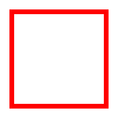
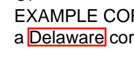

from fastcore.test import *core
Read, search, preview, and edit PDFs with pypdfium2
fastpdfium is a small ergonomic layer over pypdfium2 for working with PDFs interactively – in Jupyter, solveit, or an AI-driven kernel. The design rule: reach for text first (cheap, precise), and for pixels when layout matters. Search is content-based: a hit knows its matched text and surroundings, and can show itself highlighted on the rendered page.
pypdfium2 wraps PDFium, the permissively-licensed PDF engine from Chrome, so fastpdfium is plain Apache-2.0.
Pages know their number
pypdfium2 pages don’t record their index, but page-tagged text and search results need it. We wrap the two ways a page is loaded so every page carries a number (and new_page gains an A4 default while we’re at it).
PdfDocument.new_page
def new_page(
width:int=595, height:int=842, index:NoneType=None
):Append (or insert at index) a blank widthxheight point page, numbered like get_page
PdfDocument.get_page
def get_page(
index
):Load page index, remembering it as page.number
d = pdfium.PdfDocument.new()
pg = d.new_page()
test_eq(pg.number, 0)
test_eq(pg.get_size(), (595, 842))
test_eq(d[0].number, 0)Creating PDFs
pypdfium2’s helpers stop at page shuffling, but PDFium’s raw API can author content. These helpers cover the common needs: text, boxes, and images. Positions are in points from the top-left of the page, matching how you look at a rendered preview; the y-flip to PDF’s bottom-left convention happens inside.
PdfPage.insert_text
def insert_text(
text, # Text to insert; newlines start new lines
x:int=72, # Baseline start x, in points from the left
y:int=72, # Baseline start y, in points from the top
size:int=12, # Font size in points
font:str='Helvetica', # Standard PDF font name
):Insert text on the page at x,y
pg.insert_text('Hello\nPDF world', 72, 100, size=14)
test_eq(pg.get_textpage().get_text_range(), 'Hello\r\nPDF world')PdfPage.draw_rect
def draw_rect(
x0, y0, x1, y1, # Corners, in points from the top-left
stroke:tuple=(255, 0, 0, 255), # Stroke RGBA, 0-255 each (None for none)
fill:NoneType=None, # Fill RGBA (None for none)
width:int=1, # Stroke width in points
):Draw a rectangle from x0,y0 to x1,y1
p2 = d.new_page(100, 100)
p2.draw_rect(10, 10, 90, 90, width=4)
test_eq(p2.render(scale=1).to_pil().getpixel((50, 10))[:3], (255, 0, 0))
p2.render(scale=2).to_pil()
PdfPage.insert_image
def insert_image(
img, # PIL image, or a path PIL can open
x:int=72, # Left edge of the placed image, in points
y:int=72, # Top edge of the placed image, in points
w:NoneType=None, # Width in points (default: pixel size; aspect kept if only one given)
h:NoneType=None, # Height in points
):Place img at x,y (stored as JPEG)
p3 = d.new_page(100, 100)
p3.insert_image(Image.new('RGB', (40, 30), 'orange'), 30, 40)
test_close(p3.render(scale=1).to_pil().getpixel((50, 55))[:3], (255, 165, 0), eps=20)Serializing to bytes rounds out authoring: build a document in memory and hand it anywhere that expects PDF data.
PdfDocument.tobytes
def tobytes()->bytes:The document serialized as PDF bytes
b = d.tobytes()
test_eq(b[:5], b'%PDF-')
test_eq(len(pdfium.PdfDocument(b)), 3)A sample document
With authoring in hand, the rest of the notebook reads a small two-page PDF built right here, so the demos are deterministic and self-contained.
smpl = pdfium.PdfDocument.new()
for lines in (['CERTIFICATE OF INCORPORATION','OF','EXAMPLE CORP','a Delaware corporation'],
['ARTICLE ONE','The name of the corporation is','Example Corp']):
smpl.new_page().insert_text('\n'.join(lines), 72, 92, size=14)
pg0 = smpl[0]Text
Most questions about a PDF are answered by its text. Page.text normalizes PDFium’s CRLF line breaks; Document.text gives the whole document (or chosen pages) in one string, with page markers so line references stay grounded.
PdfPage.text
def text()->str:Plain text of the page
test_eq(pg0.text(), 'CERTIFICATE OF INCORPORATION\nOF\nEXAMPLE CORP\na Delaware corporation')PdfDocument.text
def text(
pages:NoneType=None
)->str:Plain text of pages (default: all), with --- page N --- separators
t = smpl.text()
assert 'CERTIFICATE OF INCORPORATION' in t and '--- page 1 ---' in t
assert 'ARTICLE ONE' not in smpl.text(pages=[0])
print(t)--- page 0 ---
CERTIFICATE OF INCORPORATION
OF
EXAMPLE CORP
a Delaware corporation
--- page 1 ---
ARTICLE ONE
The name of the corporation is
Example CorpSearch
Search is content-based, PDFium’s way: a Match is a range of characters on a page, so it knows its matched text and can show the text around it – which is what an LLM (or a person) actually wants from a search hit. Geometry stays internal, used only to draw highlights.
PdfDocument.search
def search(
q, # Text to search for
match_case:bool=False, # Case-sensitive?
match_whole_word:bool=False, # Whole words only?
consecutive:bool=False, # Allow overlapping matches?
)->list:All Matches for q across the document
PdfPage.search
def search(
q, # Text to search for
match_case:bool=False, # Case-sensitive?
match_whole_word:bool=False, # Whole words only?
consecutive:bool=False, # Allow overlapping matches?
)->list:All Matches for q on this page
Match
def Match(
page, i, n, tp:NoneType=None
):A search hit: chars i to i+n on page
ms = smpl.search('corporation')
test_eq([m.page.number for m in ms], [0, 0, 1])
test_eq(ms[1].text, 'corporation')
test_eq(smpl.search('nonexistent'), [])
ms[page 0: CERTIFICATE OF IN**CORPORATION** OF EXAMPLE CORP a Delaware corporati,
page 0: RPORATION OF EXAMPLE CORP a Delaware **corporation**,
page 1: ARTICLE ONE The name of the **corporation** is Example Corp]The match options come straight from PDFium, and ctx gives an LLM-ready snippet: the hit marked inline, with its surroundings.
test_eq(len(smpl.search('CORPORATION', match_case=True)), 1)
assert '**corporation**' in ms[1].ctx()
ms[1].ctx(chars=12)' a Delaware **corporation**'Preview
Page.preview renders to a PIL image at dpi (default 150: a page is ~1650px on the long edge, comfortably readable for vision models while staying cheap). Pass a query q and the matches are outlined in red; add crop=True to cut down to just the matched region plus a margin of context. PDFium’s hit boxes hug the glyphs, so highlights get a couple points of breathing room.
PdfPage.preview
def preview(
q:NoneType=None, # Text whose matches to highlight
dpi:int=150, # Render resolution
crop:bool=False, # Crop to the matched region?
margin:int=24, # Points of context around a crop
):Render to a PIL image, highlighting and optionally cropping to q’s matches
im = pg0.preview()
assert abs(im.width - 595*150/72) <= 1 and abs(im.height - 842*150/72) <= 1
test_fail(lambda: pg0.preview('missing text'), contains='not found')
pg0.preview('CERTIFICATE OF INCORPORATION')crop=True renders just the neighborhood of the hits – the cheap way to show a vision model exactly the region that matters:
pg0.preview('Delaware', crop=True)
Pages display themselves
With a _repr_png_, a bare Page expression renders visually in any rich frontend.
assert pg0._repr_png_()[:8] == b'\x89PNG\r\n\x1a\n'
pg0The idioms compose: search the document, read a match in context, then look at it on the page.
m = smpl.search('Delaware')[0]
m.page.preview('Delaware', crop=True)